什么是 Token：生图 → 还原流程审核
2026-10-14 · 实际图片、共享播放器和有保留样本的前后对照
局部优化有效，完整高保真闭环尚未通过。首个页面同运行时控制 MAE下降约17.5%；动态几何错误对象43→0。四个保留页面未一致改善，新生图仍被模板改变构图和主体。
详细审核报告 · 五页视觉量测 · 动态修复前 · 动态修复后 · 同运行时三栏控制对照
token-01
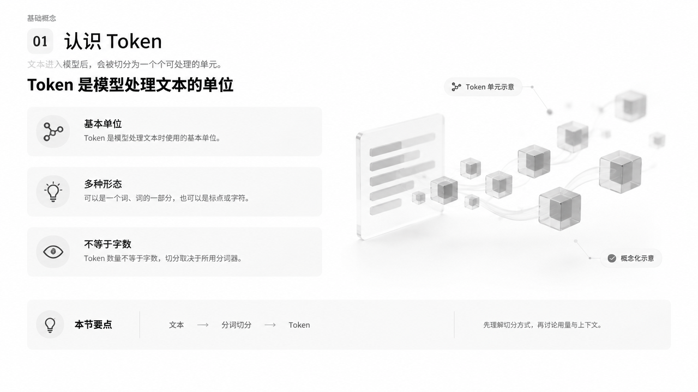
真实生成设计图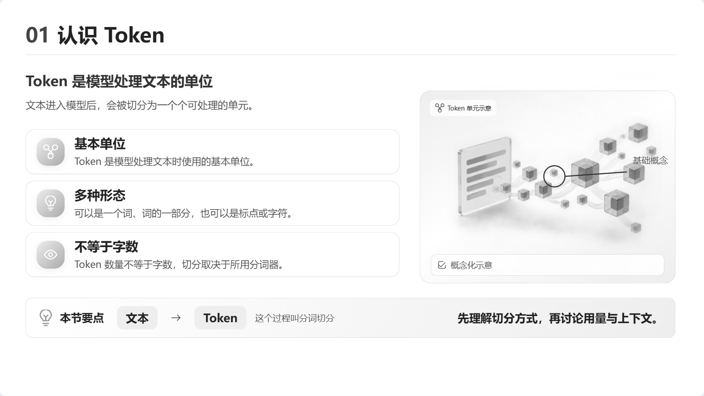
历史实际还原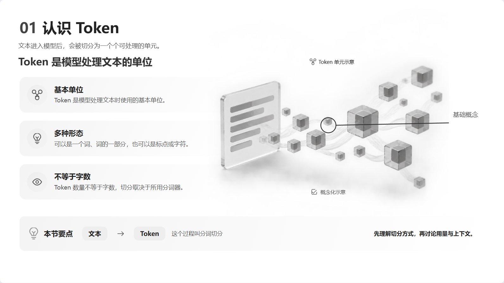
校准后前景 MAE 46.57 → 38.89；IoU 0.166 → 0.315。指标诊断空间与色调，不能当审美评分。
滑动检查目标图与实际还原
50%叠加图 · 真实静态检查 · 实际场景
token-02
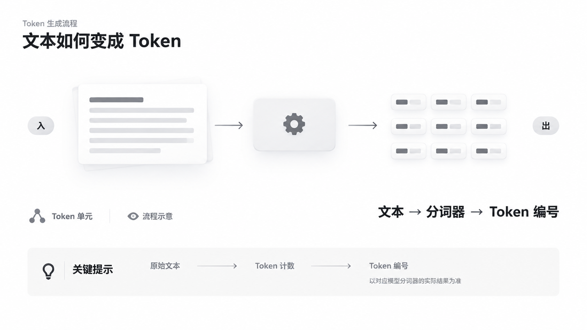
真实生成设计图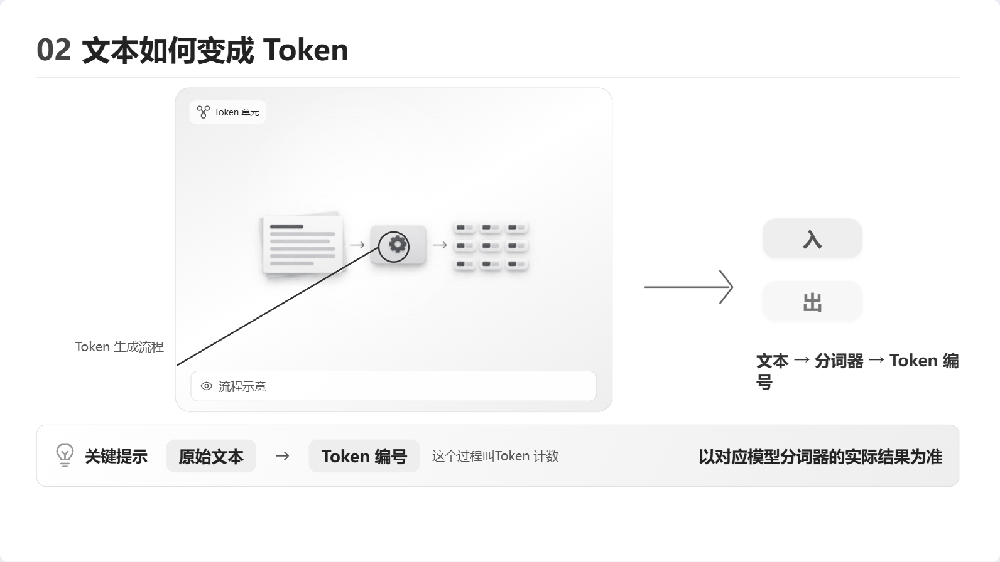
历史实际还原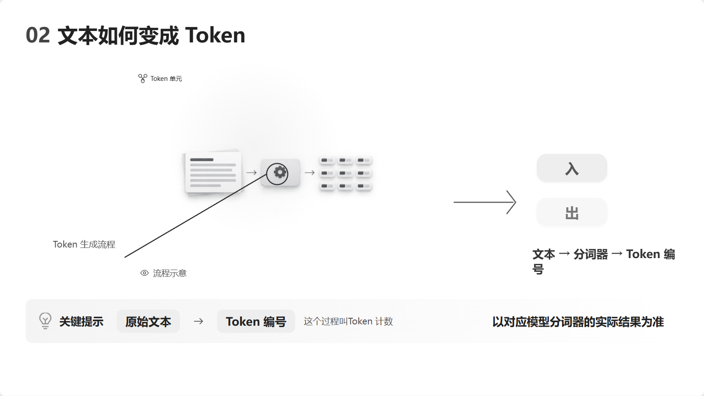
当前播放器，未逐页校准前景 MAE 51.53 → 54.54；IoU 0.115 → 0.121。指标诊断空间与色调，不能当审美评分。
滑动检查目标图与实际还原
50%叠加图 · 真实静态检查 · 实际场景
token-03
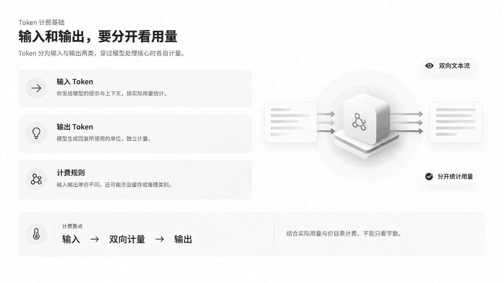
真实生成设计图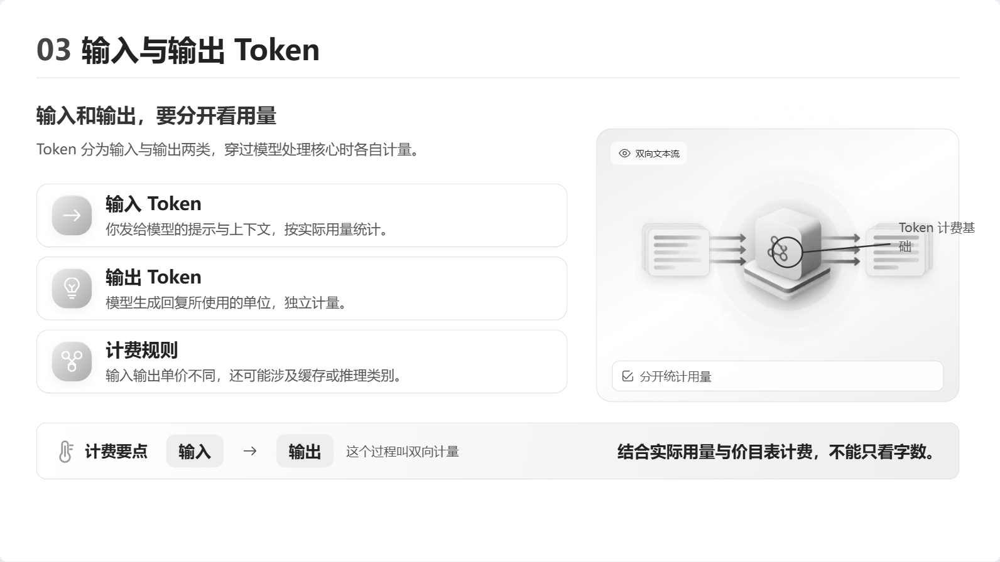
历史实际还原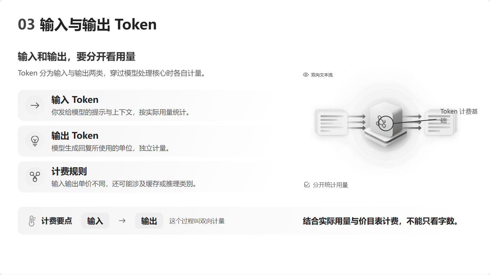
当前播放器，未逐页校准前景 MAE 52.50 → 54.13；IoU 0.188 → 0.193。指标诊断空间与色调，不能当审美评分。
滑动检查目标图与实际还原
50%叠加图 · 真实静态检查 · 实际场景
token-04
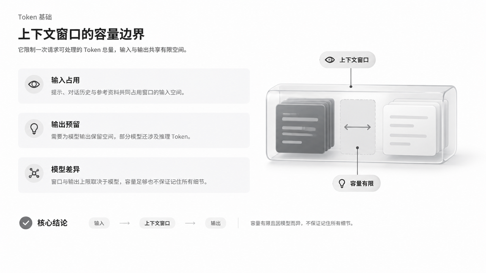
真实生成设计图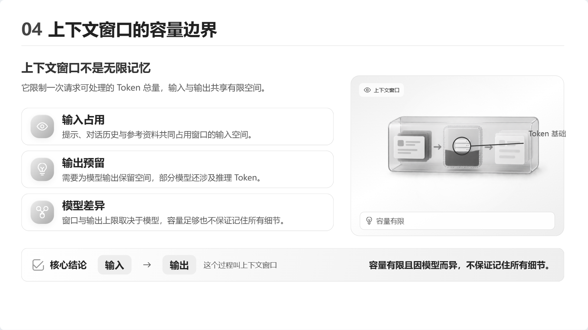
历史实际还原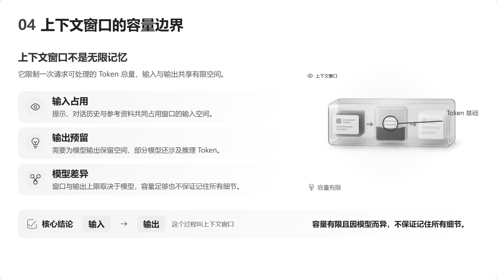
当前播放器，未逐页校准前景 MAE 51.21 → 53.03；IoU 0.221 → 0.225。指标诊断空间与色调，不能当审美评分。
滑动检查目标图与实际还原
50%叠加图 · 真实静态检查 · 实际场景
token-05
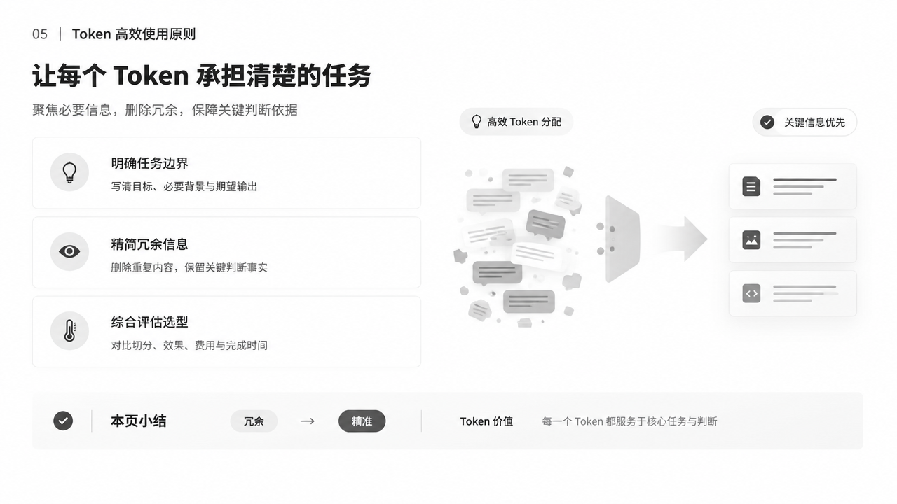
真实生成设计图历史实际还原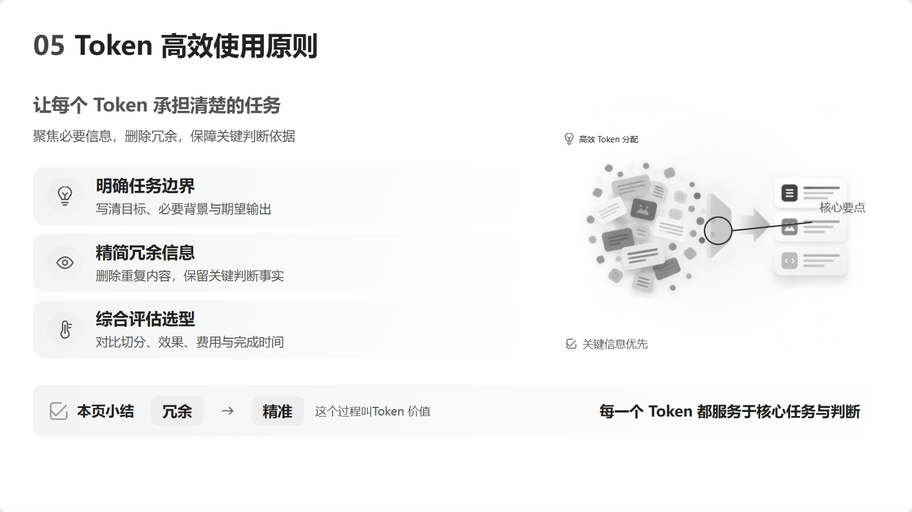
当前播放器，未逐页校准前景 MAE 58.39 → 60.37；IoU 0.140 → 0.135。指标诊断空间与色调，不能当审美评分。
滑动检查目标图与实际还原
50%叠加图 · 真实静态检查 · 实际场景
真实新增生图复测
ToAPIs gpt-image-2-vip · low/1K · 实际1536×864；历史模型/尺寸不同，不作为Prompt A/B。设计图中的主体、标签和标题容器没有被当前模板完整保留。
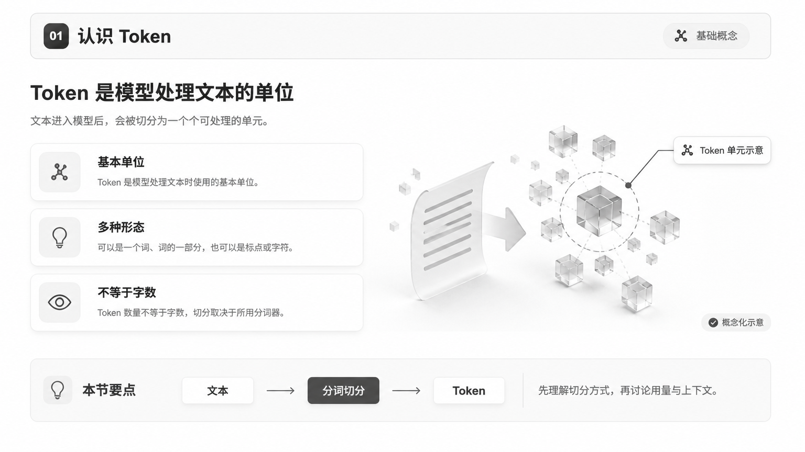
本轮真实生图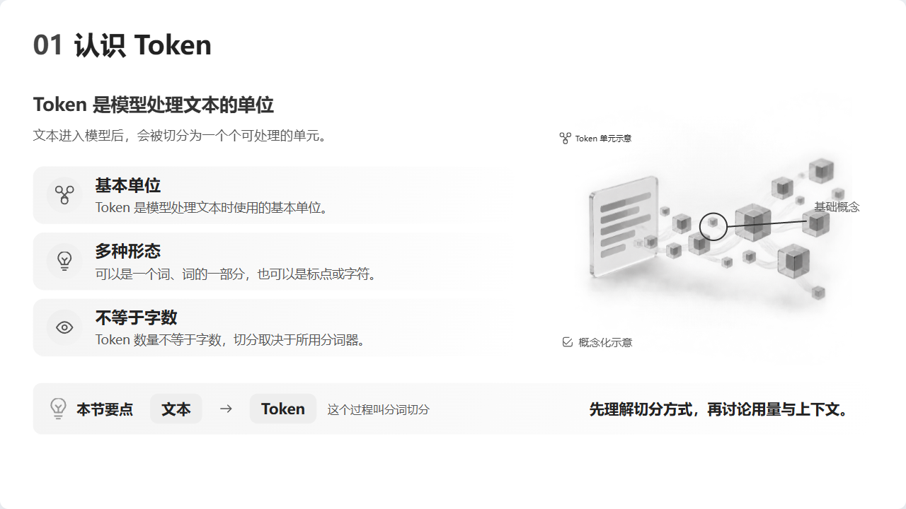
生图完成后的真实模板渲染，复用独立素材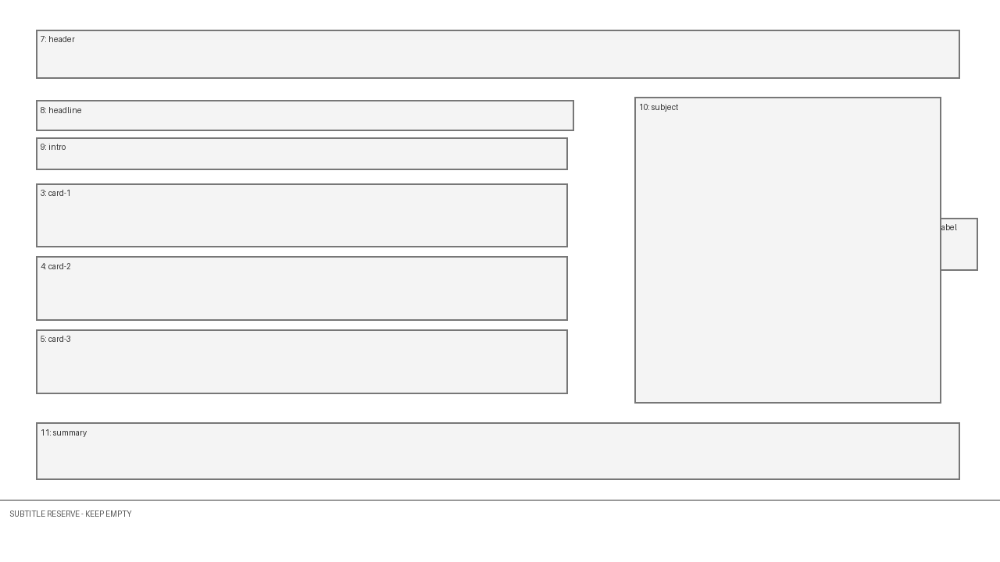
实际发送的确定性布局guide此复测失败项已进入报告，未给予正式作品批准。
完整审核报告
# “什么是 Token”：生成图到 HTML 还原的全流程审核
2026-10-14，Asia/Shanghai。RES-20261014-01。关联 HPS-026—030、033—037。报告、实际优化与前后对照均已完成；工程验证不能替代用户设计批准、听审和课程签收。
## 结论
**有条件可行，当前完整生产闭环未通过。** 注册模板内的文字、图形、关系和有限独立插图可以制作并渲染；“先生成自由设计图，再由当前模板忠实还原”没有成立。生产器在生图前选好模板，生图后继续展开这个模板，没有把图上的精确构图转录成可执行定义。生成图是提案，不是可自动编译的数据。
本轮实际做了：五页历史真生图审计、一次新增真实生图、共享生产播放器重渲染、首个实例几何校准、参考包优化和动态坐标修复。首个页面局部改善，四个保留样本没有一致改善；新增生图到模板还原仍存在主体/标注/排版差异。不能宣称任意图自动高保真还原或整课正式输出验收完成。
## 范围、来源与实验控制
- 唯一开发目录：`D:\Program Files (x86)\PPT_HTML_Studio`。原有未提交修改保留，未提交、推送或部署。
- 历史五页：`outputs/s08-token-flare-low-1k-1280-20261012-resume-03/runs/token-visual-revalidation/`。每页依据真实 `design-acceptance.json` 定位候选，没有选择其他更有利的历史版本。
- 本轮：`outputs/token-flow-audit-20261014/`，保存参考、原截图、场景前后版本、校准清单、叠加、静态review、动态对照与数值。没有写入正式课程批准或 audio_confirmed。
- 新图：ToAPIs `gpt-image-2-vip`，low/1K/16:9，一次请求，任务 `tsk_img_01M4V1MCR85R1K2A6YF9T15TG4`，completed；实际 **1536×864**。历史模型是 `gpt-image-2.5-flare-vip`，1280×720。因此新增样本是独立复测，不能作为提示词A/B或供应商质量提升的因果证据。
- 新生图实际发送分类 PNG 和布局guide；输出仍重绘主体、增加标题容器并移动标签。提示词要求不等于实际实现。
- 调用费用无可核验回执，标为未知。生成入口在已有结果或请求日志时拒绝盲目重发。
- 本轮不重新合成音频；不把历史配音、夹具、工程回归冒充主题到成片的全新自动制作。
Token 内容核对：[OpenAI Tokenizer](https://platform.openai.com/tokenizer)、[Counting tokens](https://developers.openai.com/api/docs/guides/token-counting)。Token是文本处理单元，不能通用地等于一个汉字、一个英文单词或固定字符数。积木仅表示概念，不是具体 tokenizer 的实测切分。精确数量必须绑定具体编码及测量；请求计数还涉及消息结构与模态。本次未虚构容量、价格或换算比例。
## 逐阶段问题及优化
| 阶段 | 问题与影响 | 等级 | 优化和验证状态 |
|---|---|---|---|
| 输入/讲稿 | 五页夹具由人确定，播放夹具不能证明主题自动写稿正确 | 重要 | 明确来源与事实边界；本轮未验证真实主题写稿 |
| 语义规划 | 历史单目标计划与新职责/状态合同不同；许多对象从0ms出现 | 重要 | 不把完整终态当逐句动画；真实讲稿语义仍须验证 |
| 可实现性 | 模板先选，图可重排，HTML却不能跟随 | 致命 | 增加确定性布局附件及坐标规则；仍须审阅、精确校准或退回图 |
| 设计生图 | 分类图提供外观，不能固定本页几何；输出重新解释主体和卡片 | 重要 | Prompt 0.3.1/0.4.1明确guide用途、比例和禁画项；新增实测未完全遵守，不宣称生成质量普遍提高 |
| 已有主体 | 生产调用没传run_dir，无法读取新版已有项目资源参考 | 致命 | 在唯一生产调用传入run_dir；沿用字节/hash/路径/锚点验证 |
| 参考包缓存 | guide加入封装包后，原装配器拒绝扩展过的旧包 | 重要 | 登记guide尺寸/hash/manifest；重复使用先验包并核对内容/主体，防重复附件。旧无guide包明确要求新版本目录 |
| 分层/素材 | 设计图无原分层；新独立插图不等于设计图中的主体 | 致命 | 保留真实独立素材，明确差异；没有将整页贴图冒充可编辑HTML。细部独立运动需另拆对象 |
| 终态组装 | 首页卡片比例、标题/简介顺序、主体尺度和总结排布偏离目标 | 重要 | 通过现有presentation字段校准首页，记录人工数值；未引入自由CSS或覆盖正式作品 |
| 静态验收 | 无溢出会接受不同构图 | 重要 | 增加同尺寸三栏、50%叠加和前景指标；不承诺未经证明的95%相似度 |
| 动态几何 | renderer保留首次seek的代码对象坐标；后续渲染污染历史返回值 | 致命 | 每次renderAt创建独立geometry，真实同源前后验证失败对象 **43→0**，五页历史快照不可变性 **0/5→5/5** |
| 像素确定性 | DOM一致时，几个抗锯齿像素也可能导致PNG hash变化 | 一般 | 分开记录DOM、几何和像素；等待两次绘制帧，保留严格hash失败，不误称语义错乱 |
| 语义QA | 能播放、帧不同、坐标正确均不能证明讲解含义正确 | 致命 | 保留semanticApproval=false、audioBindingVerified=false；本轮没有完成真实模型逐句评估 |
| 输出/签收 | 本次校准未重新绑音频、听审或正式导出 | 重要 | 不伪造批准；正式MP4/PPTX闭环仍须独立验收 |
## 已落地的改动
1. `html_layout_reference.py`从注册canvas/slots生成1280宽的布局PNG，过滤全幅annotation及父级figure，登记真实附件；英文槽位、编号和字幕提示禁止进入成品。
2. `html_reference_package.py`收敛Prompt的输入职责：分类图供外观，guide供几何，主体附件供身份；保留准确内容/语块状态，强化坐标和顺序规则。新包可核验重复复用；篡改或输入不匹配拒绝。
3. `html_production_service.py`补run_dir；`html_design_candidates.py`把guide源纳入定义身份，源变化使相关新候选失效，保留旧记录。
4. `html_engine/visual/renderer.cjs`修复几何缓存，并从源重建播放器。工作区另有A05等既有/并行修改，本报告不把它们归为本轮成果。
5. `compare_visual_reconstruction.py`导出并排、叠加和指标；大面积白背景不计入前景误差。它是审计工具，尚未接入自动审批阈值。
6. `audit_token_reconstruction.py`保存五页前后场景并调用实际review；首个实例的校准明示为人工转录，不宣称自动识图。
7. `audit_token_motion.cjs`采样动作边界与逆序seek；用保存的旧renderer构建独立baseline，验证当前geometry修复。没有回滚仓库源码来做基线。
生产Prompt修改按仓库 `.agents/skills/optimize-prompts/SKILL.md`：核对真实输入—模型输出—后续消费者；稳定规则只定义一次，变量保留plan/指导/附件；不要求模型猜内部ID/hash；不覆盖用户可编辑设置和历史批准。
## 视觉效果：同一目标图的前后对照
主对照保留同一张历史设计图。优化前为真实历史截图；改后是共享播放器渲染校准后的场景，没有换目标或贴整页背景。参考1280×720，HTML实际1592×896，显式等比重采样后比较。
指标：RGB先Gaussian blur半径2；灰度均值低于240为前景；MAE在两图前景并集内计算，越低越好；IoU是前景区域重合，越高越好。这些只诊断空间/灰度，**不能叫视觉相似度百分比**，不能替代字义、身份、关系、动画和审美。
| 页面 | 前MAE | 后MAE | 前IoU | 后IoU | 结论 |
|---|---:|---:|---:|---:|---|
| 01认识Token（校准） | 46.57 | 38.89 | 0.166 | 0.315 | MAE下降约16.5%；主体细节仍不同 |
| 02文本变为Token（保留） | 51.53 | 54.54 | 0.115 | 0.121 | 混合结果，不能认定改善 |
| 03输入/输出计量（保留） | 52.50 | 54.13 | 0.188 | 0.193 | 混合结果，不能认定改善 |
| 04上下文窗口（保留） | 51.21 | 53.03 | 0.221 | 0.225 | 混合结果，不能认定改善 |
| 05高效使用Token（保留） | 58.39 | 60.37 | 0.140 | 0.135 | 两项均未改善 |
历史截图与当前样式有版本差异，因此不能把全部变化归因于本轮。另做**同当前播放器、同内容、同素材、同参考的未校准/校准控制**：47.13/0.167 → 38.89/0.315，MAE下降约17.5%。这证明本页精确布局校准有效，不证明自动识图能力。控制截图1280×720，校准截图重采样到同尺寸，抗锯齿可能有细微差异。
新图完成后再次用现有模板/独立素材渲染，MAE约51.07、IoU约0.186。新图的主体形状、箭头、标签位置和标题容器没有完整保留，**新增生图到模板还原的高保真验收仍失败**。不同模型的单次复测不作Prompt A/B结论。
## 动态优化的因果验证
在同一组校准场景、同一浏览器和同一资源下，以保存的旧renderer和修复版分别取帧。五页各10个时间点，包含动作边界、起中末和逆序跳转；DOM错误均为0。
| 页面 | 旧版移动对象geometry错误 | 修复后 | 旧版快照不被后续seek修改 | 修复后 |
|---|---:|---:|---|---|
| 01 | 8 | 0 | 否 | 是 |
| 02 | 8 | 0 | 否 | 是 |
| 03 | 9 | 0 | 否 | 是 |
| 04 | 9 | 0 | 否 | 是 |
| 05 | 9 | 0 | 否 | 是 |
两次绘制帧后仍有少量严格PNG hash差异；例如03终态4像素、05终态7像素不同，RGB全帧平均误差约0.000004和0.000006（0—255范围）。DOM一致，不能把它解释为动作顺序错误，也不能声称所有帧逐像素一致。原始差异和hash保留。
## 工程验证与代码审核
- Python相关回归63 passed，覆盖guide缓存/篡改、实际包与请求恢复、供应商边界及生产集成；一条Starlette deprecation warning。
- visual build成功；visual运行验证14项通过；动作验证6项通过，新增移动坐标及历史快照不可变性回归。
- 五页静态review通过，浏览器错误0。几何通过不等于视觉、语义通过。
- 首次visual verify出现Array buffer allocation failed；独立重跑14项通过。失败没有抹除，没有降低断言。
- 代码按正确性、可读性、归属、安全和性能检查：guide不是生成结果/批准；输入来自注册定义；附件受现有路径/字节验证；未保存密钥；新旧renderer分开；比较/生成脚本不作为产品自动调度证明。
- 没有执行全新主题写稿、五页重新生图/资产、配音、独立真实语义QA、正式MP4/PPTX和目标软件验收。对此不作通过结论。
## 推荐的实际流程
讲稿与知识目标 → 注册能力/对象分工 → 固定布局及已有素材 → **生成设计提案** → 审阅内容/几何/主体/能力 → 精确场景定义冻结可执行目标 → 独立素材验证 → 共享HTML静态组装 → 同尺寸对照 → 真实音频与逐句动作 → 语义QA/听审 → 用户作品批准 → 正式导出/解码验证。
生成图偏离模板时必须明确选择：用受支持的实例几何校准、按可执行布局重做提案，或建设对应组件后再验。不能忽略图上构图，却声称原设计已还原。已接受的布局与素材应在预算内复用；无需每页重新任意生图。
## 尚未关闭与可行性边界
本轮可修复的工程问题已落实并验证。仍未关闭：设计图到冻结布局的自动转录、设计主体与独立资产的严格身份一致、四个保留样本的完整视觉校准、真实讲稿逐句动画验证，以及普通产品入口完整课程签收。现有合同不是这些能力的实现证明。
“任意好看的图都能自动变成相同的可编辑动画”：目前不成立。“在受支持布局和资产预算内，通过真实审阅与精确场景定义制作HTML”：本轮支持可行。下一阶段应测整课真实输入和所需人工干预量，不应继续以更长的审美提示词或每页临时CSS补丁代替系统能力。
复现：`.venv/Scripts/python.exe scripts/audit_token_reconstruction.py`；`node scripts/audit_token_motion.cjs`；新增生图日志已有时不要重发。对比入口 `outputs/token-flow-audit-20261014/index.html`，原始量测见 `results.json`、`controlled-comparison/comparison.json`、`motion-evidence*.json`。